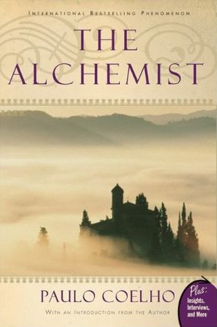

|  |
The Alchemistby Paulo Coelho |
I feel like everyone LOVES this book, almost all of my friends recommend me. Originally it was written in Portuguese and there are 67 translations available for this book. Unfortunately, no translation available in my mother language ie Urdu but it's ok, i went for English.
Moral: everything you want and need is close to home. Take chances. Follow your "personal legacy."
The main theme of this novel is finding one's destiny. New York Time says: more self help than literature
In short, the book tried to be deep. "Speaking with the wind and the sun" and "being a shepherd" and getting over "personal hardship". I like these things because these things are good for you to be relax, to find your eternity but most of peope don't like these things because these are actually not logical things.
Submitted by: Ali Younas